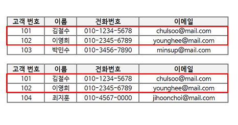

개념 학습
데이터 전처리 개념과 작업 구분
데이터 전처리는 원시 데이터를 원하는 형식으로 변환하는 작업을 의미하며, 여러 데이터 처리 작업에서 가장 기초가 되는 단계이다. 데이터 전처리 작업은 데이터 정리, 데이터 통합, 데이터 정규화로 구분한다.
데이터 전처리 작업 구분
데이터에서 오류, 불일치 또는 누락된 데이터를 제거하거나 수정하는 작업이다. 예를 들어, 중복 항목 제거, 맞춤법 오류
수정 또는 누락된 값 채우기 등이 있다.
처리
서로 유사하거나 동질성을 가진 데이터를 하나의 데이터로 합하는 작업이다. 예를 들어, 중복되는 데이터 속성값을 통합하여 효율성을 높일 수 있다.

처리
데이터를 분석하기 쉽고 일관성을 유지할 수 있도록 공통 척도 또는 일정 범위로 변환하는 작업이다. 예를 들어, 데이터
속성값을 일정한 범위에 속하도록 조정할 수 있다.

처리